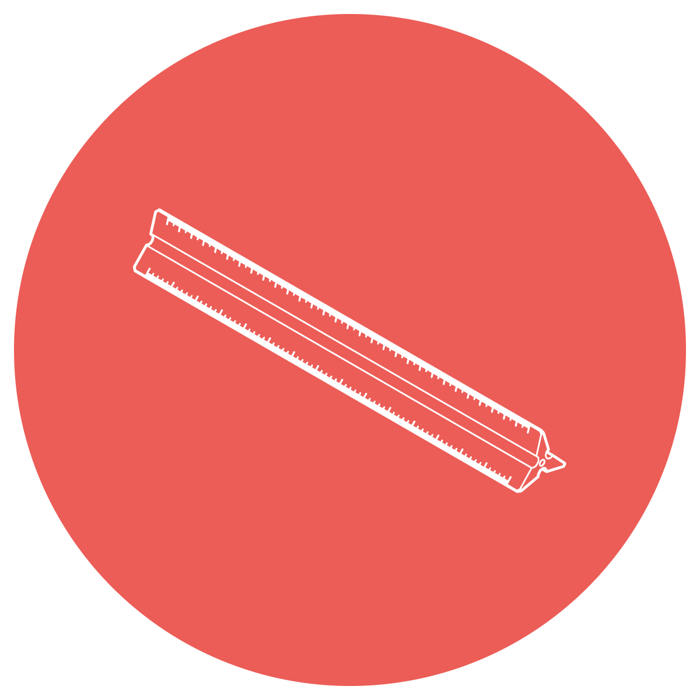

Welcome to WrkZn!
Draft plansheets online, this can be done fast and for free!
Use tools to auto generate elevation profiles!
Create exhibits that are at scale!

This is a website where you can use basic CAD functions to create exhibits online for free. Auto-generated tools and workflows have been developed to help with acheiving difficult tasks such as creating elevation profiles of the existing ground.
Now anyone can develop simple plansheets, layouts and exhibits without having to learn complicated CAD software. Load aerials and draft to scale for free!
Things you can do on WrkZn:
- Set up exhibits with Google Earth Aerials and customize settings.
- Upload images
- Write Text
- Draw lines at scale
- Add Callouts
- Add dimensions
- Auto generate elevation profiles
- Upload your own titleblock
- Link ArcGIS, upload Shapefiles and upload KMZ's.
Create KMZ from Google Earth